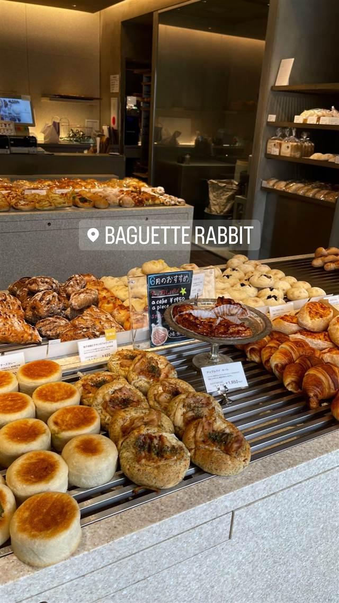

東京メロンパン 神保町靖国通り店
靖国通り沿いで実演販売する焼きたてメロンパン
東京メロンパン神保町店
神保町・靖国通り沿いにあるメロンパン専門店。店頭でその場で焼き上げるできたてのメロンパンを、食べ歩きしやすいスタイルで提供している。
REVIEWS
世間の評判
3.27食べログ
サクッと香ばしい皮とコスパの良さ
- 外はサクッと香ばしく中はふんわり軽い食感を高く評価する声が多い
- 220円前後という手頃な価格をコスパが良いと評価する声が多い
- テイクアウト専門なので持ち帰る際につぶれやすい点に気をつける人もいる
食べログ 口コミ179件
| 看板 | メロンパン（プレーン） |
|---|---|
| こだわり | 店頭で実演しながら焼き上げ、できたてを提供。外側はカリッと香ばしく、中はふんわりとした食感。 |
| どこから | 都心 |
| 営業時間 | 月〜日 10:30-21:00 |
| 予算 | 昼 ～¥999 夜 ～¥999 |
| 定休日 | 無休 |
| 場所 | 神保町駅 東京都千代田区神田神保町 |
| メモ | 神保町駅から徒歩2分、靖国通り沿い。食べ歩き利用が中心の販売スタイル。 |
食べたもの：メロンパン
NEARBY
近い店・同じ系統の店
-
 ★
二郎系(直系) 神保町
ラーメン二郎 神田神保町店
三田本店直系の乳化系濃厚豚骨醤油が自慢の二郎ラーメン
昼 ¥1,000～¥1,999
★
二郎系(直系) 神保町
ラーメン二郎 神田神保町店
三田本店直系の乳化系濃厚豚骨醤油が自慢の二郎ラーメン
昼 ¥1,000～¥1,999
-
 ★
つけ麺 神保町駅
つけそば 神田勝本
銀座の一つ星フレンチシェフが手がける清湯つけそば
昼 ～¥999
★
つけ麺 神保町駅
つけそば 神田勝本
銀座の一つ星フレンチシェフが手がける清湯つけそば
昼 ～¥999
-
 欧風カレー 神保町駅
ガヴィアル
継ぎ足す秘伝ソースに28種のスパイス、百名店の欧風カレー
昼 ¥1,000～¥1,999 夜 ¥1,000～¥1,999
欧風カレー 神保町駅
ガヴィアル
継ぎ足す秘伝ソースに28種のスパイス、百名店の欧風カレー
昼 ¥1,000～¥1,999 夜 ¥1,000～¥1,999
-
 カレー 神保町駅
スマトラカレー 共栄堂
1924年創業、小麦粉不使用で元祖スマトラカレーを今に伝える店
昼 ¥1,000～¥1,999 夜 ¥1,000～¥1,999
カレー 神保町駅
スマトラカレー 共栄堂
1924年創業、小麦粉不使用で元祖スマトラカレーを今に伝える店
昼 ¥1,000～¥1,999 夜 ¥1,000～¥1,999
-

ベーカリー 自由が丘駅 baguette rabbit 自由が丘店（バゲットラビット） 石臼自家製粉の小麦で2日仕込む看板バゲット、金賞受賞 昼 ～¥999 夜 ～¥999 -
 ベーカリー 六本木
bricolage bread & co.（六本木ヒルズけやき坂テラス店）
大阪のパン屋と西麻布フレンチ、ノルウェーの3者が生んだ全粒粉パン
昼 ¥1,000～¥1,999 夜 ¥1,000～¥1,999
ベーカリー 六本木
bricolage bread & co.（六本木ヒルズけやき坂テラス店）
大阪のパン屋と西麻布フレンチ、ノルウェーの3者が生んだ全粒粉パン
昼 ¥1,000～¥1,999 夜 ¥1,000～¥1,999